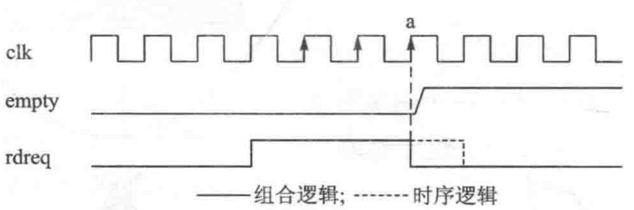

FIFO¶
FIFO （First Input First Output），即先入先出队列。在数字电路设计中所说的 FIFO 实际上是指 FIFO 存储器，主要用于数据缓存和异步处理，当然 FIFO 存储器缓存数据也遵循先入先出的原则。
FIFO 本质上是一个 RAM，它与普通存储器的区别是没有外部读/写地址线，这样使用起来非常简单，但缺点是只能顺序写入数据，顺序读出数据，其数据地址由内部读/写指针自动加1完成，不能像普通存储器那样可以由地址线决定读取或写入某个指定的地址。
FIFO 规则¶
FIFO规则1： 使用 Show-ahead 都模式¶
根据 FIFO 的读模式，一般有两种使用模式：Show-ahead 和 Nornal 模式。这两种模式的区别在生成 FIFO IP 核步骤中说明。
其中 Normal 模式是读使能有效后的下一拍读出相应数据。而 Show-ahead 模式是先进行数据输出，在读使能有效时对 FIFO 输出数据进行更新。即 FIFO 中的第一个数据输出在总线上，在读使能信号到来的下一拍直接输出第二个数据。
推荐使用 Show-ahead 模式，因为在这种模式下可以将读使能信号与读出数据当做有效信号和数据来使用，只要读使能有效则对应的数据就始终有效。
FIFO规则2： 读、写隔离规则¶
读、写隔离规则是指： 读控制和写控制是独立的，它们之间除了用 FIFO 交流信息外，不能有任何信息传递。因此，既不能根据 FIFO 的读状态或者读出的数据来决定写行为，也不能根据 FIFO 的写状态和写入的数据来决定读行为。
FIFO规则3： 读使能必须判断空状态，并且用组合逻辑产生¶
rdreq 必须由组合逻辑产生，原因与 empty 有关。
通过下图来说明 rdreq 与 empty 的关系。使用 Show-ahead 模式，假设 FIFO 中存有 3 字节数据，现对 FIFO 进行读操作，要把 FIFO 中存的所有数据读出来。
从图中可以看出，由于电路存在一定延时，在 a 时刻 FIFO 已经为空，empty 变为高电平需要经历一段时间。如果用时序逻辑产生 rereq，在 a 时刻 empty 为 0，则表示 FIFO 中还有数据（实际上已经为空），因此 rereq 还要保持一个时钟周期。在 FIFO 为空的情况下要再读取一个数据，读操作会出错。如果用组合逻辑产生 rereq，当 empty 为 1 时，rdreq 马上拉低，图中的实线部分波形，就不会出现读取空 FIFO 的错误。
FIFO规则4： 处理报文时，把指示信号与数据一起存入FIFO¶
FIFO 不仅能保存“数据”，也能保存“指示信号”，因此可以将数据和对应的“指示信号值”一起写入 FIFO。
假设一个 8 位宽度的数据，如生成一个 10 位宽度的 FIFO，保存到 FIFO 的数据是 {din, din_sop, din_eop}。通过这种方式保存后，就很容易产生 dout_sop 和 dout_eop 信号了，从 FIFO 中读到的数据，就可以用来判断报文的开始和结束，从而用于其它判断等。
FIFO规则5： 读、写时钟不同时，必须用异步FIFO¶
FIFO 按时钟分可以分为同步 FIFO 和异步 FIFO。
同步 FIFO：指读时钟和写时钟都相同的 FIFO。同步 FIFO 内部没有异步处理，因此结构简单，资源占用较少。
异步 FIFO 是指读时钟和写时钟可以不同的 FIFO。异步 FIFO 内部有专门的异步处理电路，处理读、写信号的交互，因此异步 FIFO 结构复杂，占用资源较大。